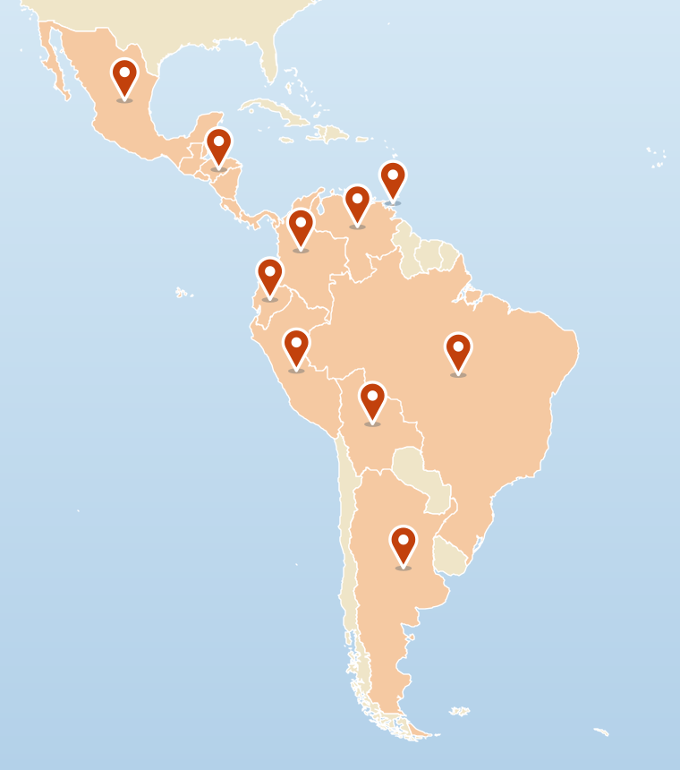

Career log
More than 37 years in oil and gas, newest first. Each block on the strip is as wide as the years spent there.

-
2024 to now
Roku Tech
Bogotá, Colombia
- Consulting and Sales Manager, Latin America
Consulting for oil and gas companies, mainly on drilling and on fishing and remedial operations.
The company also supports oil and gas extraction, rents machinery and equipment, and offers engineering and technical consulting.
-
2023 to 2024

Wellbore Integrity Solutions
- Country Operational Manager, Mexico and Central America
I managed clients and results in Mexico, with responsibility for the profit and loss account and a team of 105 people. I led the tenders and the operating strategy.
Revenue grew 70% year over year between 2022 and 2023, and profitability grew 115%. Days sales outstanding fell by 60.
-
2018 to 2022
Nabors Drilling International
- Contract and Marketing Manager, Colombia 2019 to 2022
- Operations Manager, Ecuador 2018 to 2019
In Colombia I managed client contracts and rig market opportunities, to raise the number of active rigs and widen the client base. I led the growth of Nabors Drilling Solutions, mainly casing and tubular running.
I worked with automated rigs, performance automation, wellbore services and remote operations. I also worked on energy transition: hybrid energy systems and green fuels that reduce emissions.
In Ecuador I led the restart of operations in the rig market. We began with a single rig, and it delivered outstanding performance.
-
2017 to 2018

Independent work
- Entrepreneur and consulting work
-
2010 to 2016
Schlumberger
- Drill Bits and Drilling Tools Operation Manager, Brazil 2015 to 2016
- Sales and Marketing Manager, Drilling Tools and Remedial, South America 2013 to 2015
- Manager, Drilling Tools and Remedial, Peru, Colombia and Ecuador 2010 to 2013
In Brazil I led client relations and performance for bits and drilling tools. I was responsible for the profit and loss account and a team of 172 people, and I took part in tenders with several clients.
For South America I set the marketing and sales strategy of the segment. That meant new technology, tender strategy, market analysis, competitor monitoring and input to research and development.
Before that I led client relations and results for drilling tools and remedial services in Peru, Colombia and Ecuador.
-
2005 to 2010

Smith International
- Region Operation Manager, Remedial and Drilling Tools: Venezuela, Colombia, Ecuador and Peru 2007 to 2010
- Venezuela Country Operation Manager, Drilling and Remedial Tools 2005 to 2007
I led a tenfold growth of the business by introducing new products, services and technologies in a competitive market where price mattered. I oversaw the facilities and civil works for the Neiva base, and I took part in the merger with Schlumberger.
Earlier, as country manager for Venezuela, I grew the business with the company's wider product range and won several contracts through tenders. I also expanded the base in Maturín.
-
1997 to 2004

Baker Hughes
- Latin America Drilling Optimization Manager, Integrated Projects 2003 to 2004
- Latin America OASIS Senior Drilling Optimization Engineer 2001 to 2003
- Venezuela Drilling Operation Manager 1999 to 2001
- Venezuela Drilling Integration and Operations Manager 1998 to 1999
- Venezuela Drilling Integration Coordinator 1997 to 1998
I managed integrated projects that used new technology for directional wells, such as rotary steerable and vertical drilling systems. In western Venezuela they cut drilling time and reached the geological targets.
On the OASIS team I analysed drilling performance in Venezuela, Colombia, Argentina, Bolivia, Brazil, Ecuador, Peru and Trinidad and Tobago. The aim was to cut time and cost for clients without raising the well budget (AFE).
On the Morichal project I managed field and administrative operations for 20 re-entry wells. They reached their geological targets and were drilled in record time.
-
1987 to 1997

PDVSA
- Budget Analyst, Maraven 1994 to 1997
- Drilling and Workover Coordinator, West Venezuela 1988 to 1994
- Reservoir Engineer, West Venezuela 1987 to 1988
I started as a reservoir engineer on Lake Maracaibo, then moved to offshore drilling and workover. I led a team of five engineers and four workover rigs.
My last role was budget analyst: I calculated the yearly investment budgets (AFEs) for all the drilling work of the Petroleum Engineering Department.